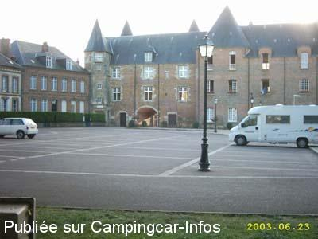
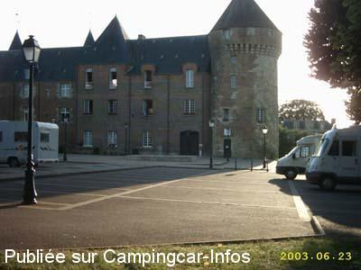

AS = Aire de services uniquement de :
GACÉ
(N° 723)
Accès/adresse :
Rue du Marché aux Bestiaux
61230 GACÉ
61230 GACÉ
Latitude : (Nord) 48.79508° Décimaux ou 48° 47′ 42′′
Longitude : (Est) 0.29599° Décimaux ou 0° 17′ 45′′
Tarif : 2011
Services : 2 €
Type de borne : EURO-RELAIS
Services :


Commerces et restaurants à proximité
Wifi clients SFR
Autres informations :
Stationnement au fond du parking de la mairie

Le 04/09/2003 par MICHEL

Le 30/08/2003 par
de
Paulopicardie
le 22/06/2011 :
Mi-juin 2011, nous sommes arrêté sur ce parking pour une dizaine de C.C (WC publique à 50 mètres), en plein centre ville de réglementé de17h à 10h, pas toujours simple de pouvoir manoeuvré entre les voitures, mais le soir c' est très calme. La borne n' est pas toujours disponible le matin des camions de livraison stationnant régulièrement dessus, il faut être à l' affut. Sinon super débit en wifi.
Mi-juin 2011, nous sommes arrêté sur ce parking pour une dizaine de C.C (WC publique à 50 mètres), en plein centre ville de réglementé de17h à 10h, pas toujours simple de pouvoir manoeuvré entre les voitures, mais le soir c' est très calme. La borne n' est pas toujours disponible le matin des camions de livraison stationnant régulièrement dessus, il faut être à l' affut. Sinon super débit en wifi.
de
Papyvelo
le 12/11/2009 :
Nous avons passé une très bonne nuit sur cette aire tranquille, située en pleine ville. Proximité des commerces. Etape parfaite.
Nous avons passé une très bonne nuit sur cette aire tranquille, située en pleine ville. Proximité des commerces. Etape parfaite.
de
JEAN BEAUVILLAIN
le 11/06/2007 :
De passage dans l'Orne de retour de week-end à Angers, nous avons pris notre repas sur le parking de la mairie, tout près de l'aire de services : tout est parfait, bien indiqué et bien situé (commerces). J'invite les amis camping-carites de passage dans la région à faire la " pause Gacé "
De passage dans l'Orne de retour de week-end à Angers, nous avons pris notre repas sur le parking de la mairie, tout près de l'aire de services : tout est parfait, bien indiqué et bien situé (commerces). J'invite les amis camping-carites de passage dans la région à faire la " pause Gacé "